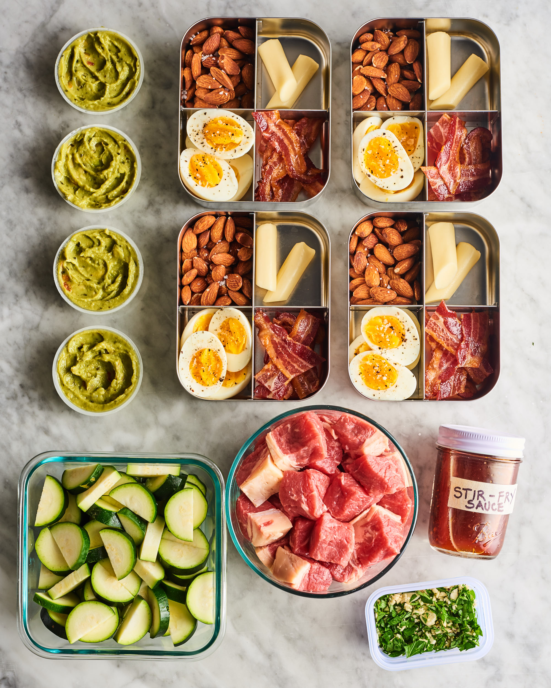

A ketogenic diet should consist of about 60-80% fat, 10-30% protein, and no more than 5-10% — or 20-50 grams — of carbs per day. Focus on high fat, low carb foods like eggs, meats, dairy, and low carb vegetables, as well as sugar-free beverages. Be sure to limit highly processed foods and trans fats.
